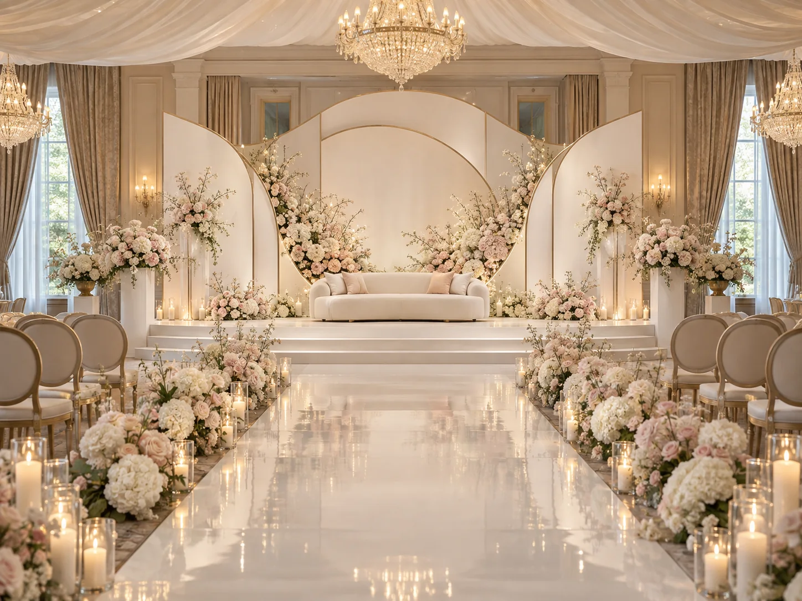
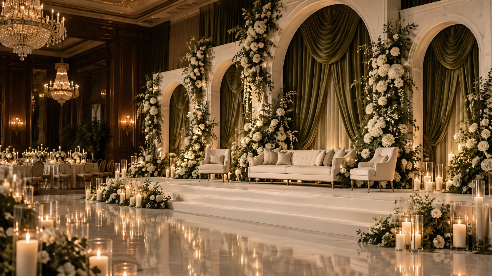
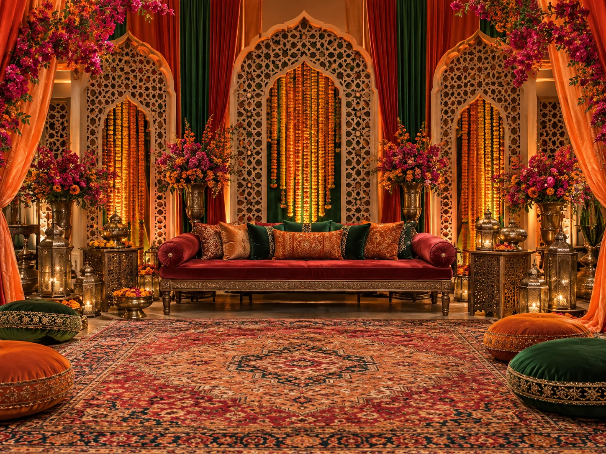
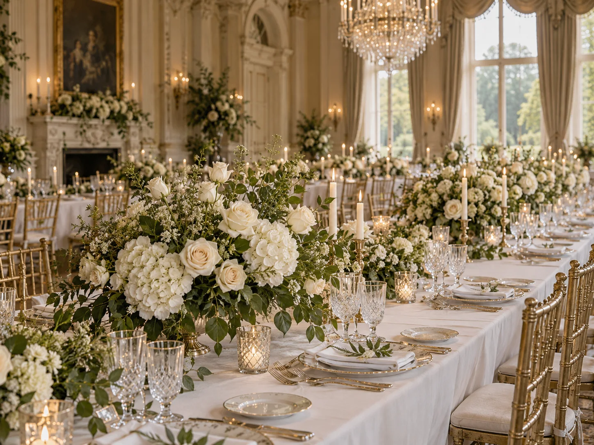
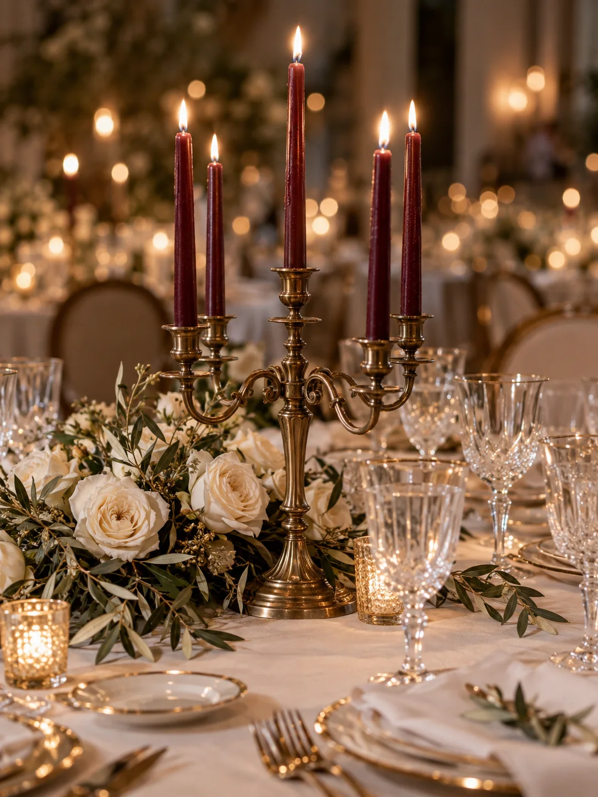

01 / WEDDINGS & CEREMONIES
A beginning
to remember.
Nikkah, Walima and receptions.
Thoughtful settings for your traditions and your people.

WEDDING DÉCOR & EVENT STYLING
A feeling. A setting.
A day that feels like you.
01 / IT STARTS WITH YOU
Before the flowers, before the setting,
there’s a feeling.
The quiet of your Nikkah. The colour of your Mehndi. The joy of a room filled with your favourite people. Tell us what matters, and we’ll help shape a celebration that feels like you.
Find your celebration02 / NOW, PICTURE THE DAY
From a meaningful beginning
to a celebration full of life.

01 / WEDDINGS & CEREMONIES
Nikkah, Walima and receptions.
Thoughtful settings for your traditions and your people.

02 / MEHNDI & CELEBRATIONS
Rich flowers, warm details and joyful settings.
A celebration of everything you love.

03 / RECEPTIONS & TABLE STYLING
Flowers, table details and a setting that brings everyone together. Considered as one complete celebration.
Explore décor & hire
03 / THE LITTLE THINGS, TOGETHER
Once we understand the feeling, we shape the setting.
Floral frames, graceful seating and a setting for the moments you’ll remember. Designed around your ceremony, personal taste and venue.
Explore the possibilitiesCentrepieces, candlelight and coordinated details that carry your chosen colours across the room.
Explore table décorA thoughtful arrival, from a softly framed walkway to floral details that lead your guests into the celebration.
Explore wedding stylingBring the details together with décor hire and styling options. We’ll discuss what suits your plans, space and budget.
View hire & packages04 / A WORLD OF POSSIBILITIES
Explore imagined décor settings.
Save a feeling for our first conversation.
AI-created décor concepts for this preview. Real event photographs will replace these images.
05 / GET TO KNOW IMANI
A personal celebration begins
with a personal conversation.
We are a family-run wedding décor and styling team based in Cardiff. We listen to your story, understand what matters, and create a setting that brings it all together.
From the colours you love to the traditions you want to honour, we take time to understand your day before the design begins.
Meet Imani EventsFROM CARDIFF, WITH LOVE.
South Wales · Newport · Swansea · Bristol & the South West06 / A CLEAR WAY FORWARD
A thoughtful plan.
Room for your imagination.
Share your date, venue, guest numbers and budget. Bring the colours, photographs and feelings you love.
We discuss the décor, personal details and practical plans, then agree a setting that works for your day.
We prepare and style your agreed décor at the venue. You enjoy your people, your celebration and the moment.
07 / BEFORE THE NEXT CHAPTER
Good questions make a beautiful beginning.
We’re here to talk through yours.
Yes. We discuss your ceremonies, family traditions and personal taste, then shape the décor around what matters to you.
Of course. Tell us the budget range you are comfortable with, your venue and the details that matter most. We can then discuss suitable décor and hire options.
Your event date, venue and approximate guest numbers are helpful. A favourite colour or saved photo can be a lovely starting point.
Yes. We prepare and style your agreed décor at the venue. Access, timings and practical details are discussed with you before the day.
We are based in Cardiff and work across South Wales and the South West, including Newport, Swansea and Bristol. Tell us about your venue if it is further afield.
We discuss your colours, traditions and the details you want to include, then agree how to bring them into your setting.
08 / LET’S BEGIN YOUR STORY
Tell us what you’re imagining.
We’ll take the next step together.